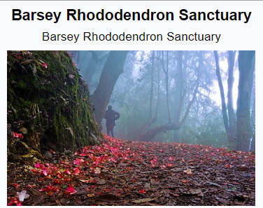

NATIONAL PARKS AND WILDLIFE SENCTUARIES

List of National Parks and Wildlife Sanctuaries of Sikkim:
1.Khangchendzonga National Park
2.Pangolakha Wildlife Sanctuary
3.Fambong Lho Wildlife Sanctuary
4.Kyongnosla Alpine Sanctuary
5.Maenam Wildlife Sanctuary
6.Barsey Rhododendron Sanctuary
7.Shingba Rhododendron Sanctuary